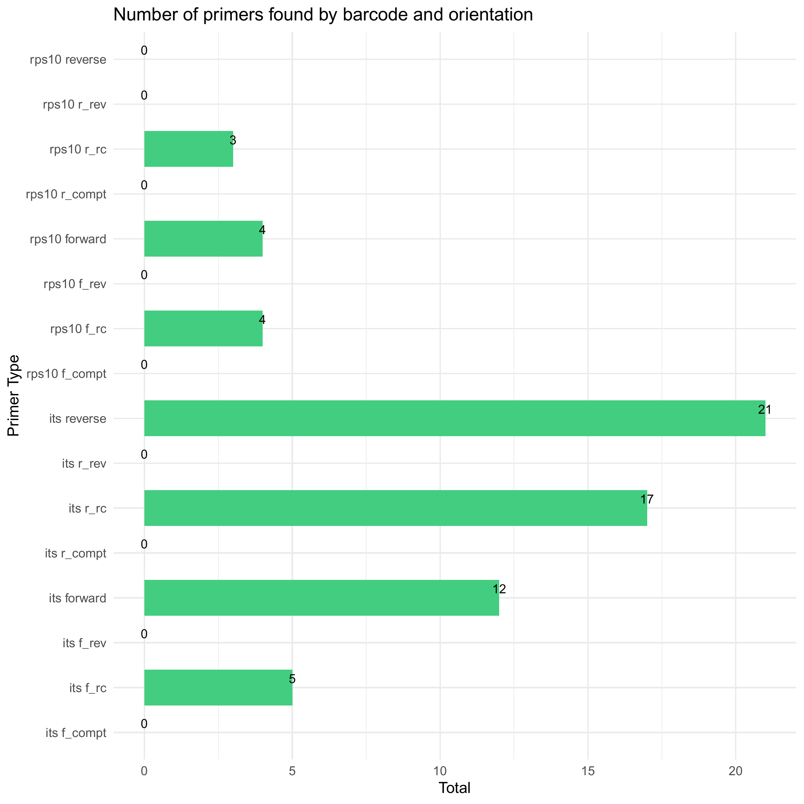
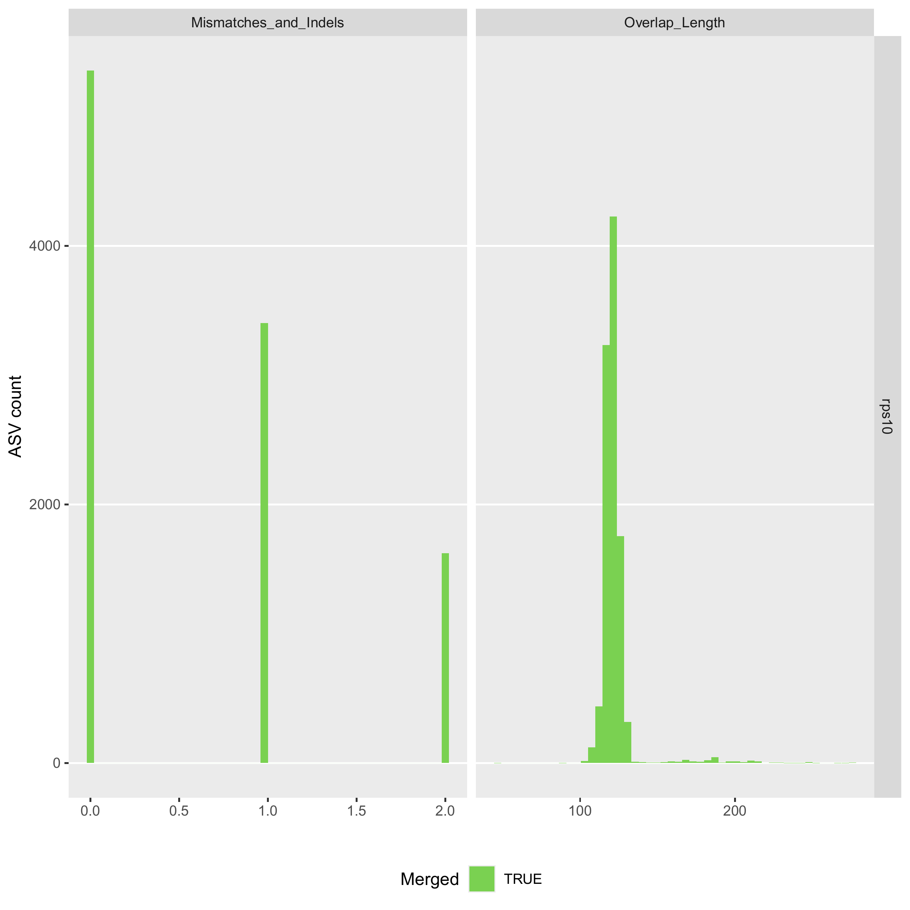
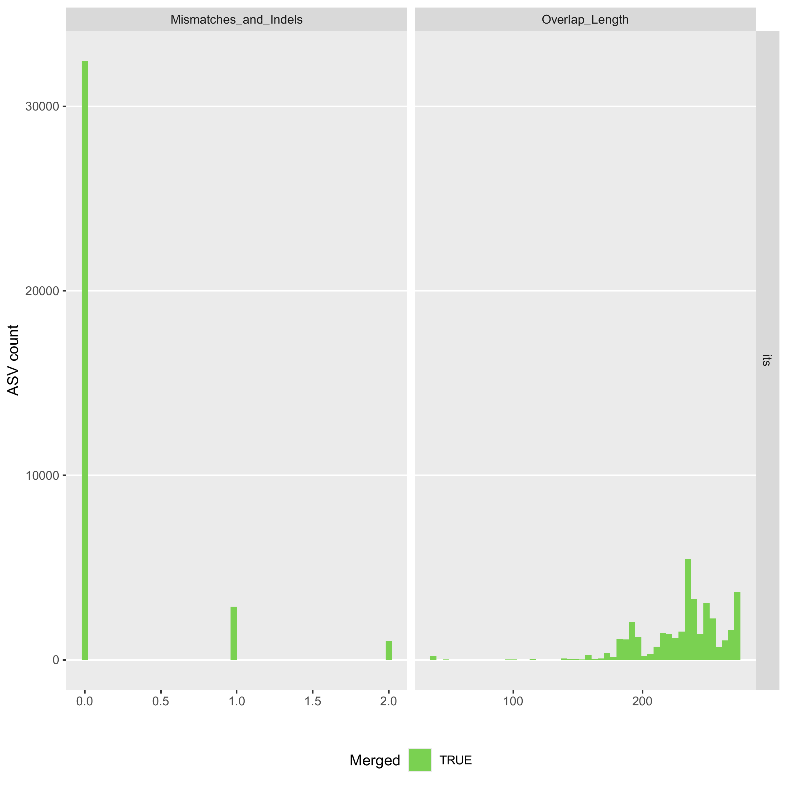
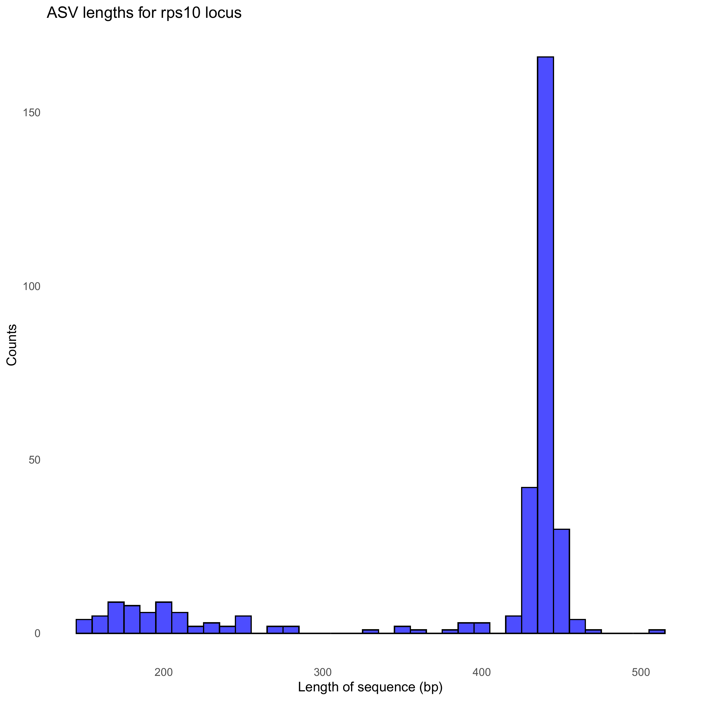
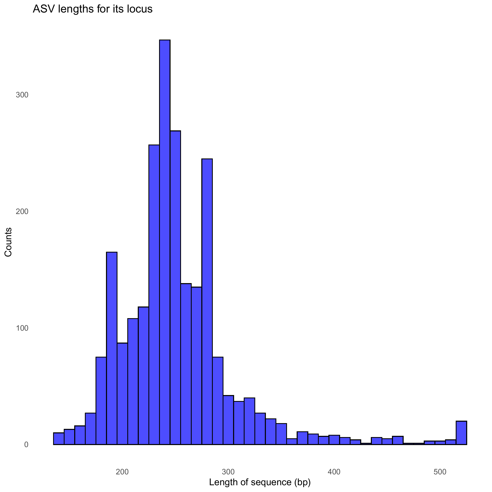

This vignette shows how demulticoder can be used when you have pooled rps10 and ITS1 amplicons within each sample.
This is example shows how an analysis is done with the full rhododendron dataset showcased in the Getting Started vignette. Reads and databases are not sub-sampled as they were for that test dataset.
Prepare input files
First, make sure input metadata and primerinfo_params files are in data folder
The only required columns are the first with sample names, and the second with the primer name/barcode used. The subsequent columns are user-specific columns for downstream steps
metadata.csv file| sample_name | primer_name | plate | well | organism | flooded | path_conc | experiment | sample_type | is_ambiguous |
|---|---|---|---|---|---|---|---|---|---|
| S1 | rps10 | 1 | A01 | Cry | TRUE | 100 | 1 | Sample | FALSE |
| S1 | its | 1 | A01 | Cry | TRUE | 100 | 1 | Sample | FALSE |
| S10 | rps10 | 1 | B02 | Cry | TRUE | 1 | 1 | Sample | FALSE |
| S10 | its | 1 | B02 | Cry | TRUE | 1 | 1 | Sample | FALSE |
| S100 | rps10 | 2 | B02 | Cin | TRUE | 1 | 2 | Sample | FALSE |
| S100 | its | 2 | B02 | Cin | TRUE | 1 | 2 | Sample | FALSE |
For the purposes of this example, I will just show the first few rows of metadata.csv file
I then included the necessary second file with the name of the barcode selected, primer sequences, and the optional DADA2 parameter options. I referenced the DADA2 tutorial to select the proper parameter options.
primerinfo_params.csv| primer_name | forward | reverse | already_trimmed | minCutadaptlength | multithread | verbose | maxN | maxEE_forward | maxEE_reverse | truncLen_forward | truncLen_reverse | truncQ | minLen | maxLen | minQ | trimLeft | trimRight | rm.lowcomplex | minOverlap | maxMismatch | min_asv_length |
|---|---|---|---|---|---|---|---|---|---|---|---|---|---|---|---|---|---|---|---|---|---|
| rps10 | CTTGGTCATTTAGAGGAAGTAA | GCTGCGTTCTTCATCGATGC | FALSE | 150 | TRUE | TRUE | 0 | 5 | 5 | 0 | 0 | 5 | 150 | Inf | 0 | 0 | 0 | 0 | 15 | 2 | 50 |
| its | GTTGGTTAGAGYARAAGACT | ATRYYTAGAAAGAYTYGAACT | FALSE | 50 | TRUE | TRUE | 0 | 5 | 5 | 0 | 0 | 5 | 50 | Inf | 0 | 0 | 0 | 0 | 15 | 2 | 50 |
Loading the Package
For now, the package will be loaded by retrieving it from GitHub. We are submitting package to CRAN
devtools::install_github("grunwaldlab/demulticoder", force=TRUE)
#devtools::load_all("~/demulticoder")
library("demulticoder")Step 1
Remove N’s and create directory structure for downstream steps
outputs <- prepare_reads(
data_directory = "~/benchmark_demulticoder/demulticoder/data",
output_directory = "~/benchmark_demulticoder/demulticoder/vignette_outputs",
tempdir_path = "~/benchmark_demulticoder/demulticoder/vignette_temp",
tempdir_id = "temp_files")
Step 2
Run Cutadapt to remove primers and then trim reads with DADA2 filterAndTrim function
cut_trim(
outputs,
cutadapt_path="/usr/bin/cutadapt")We can now visualize the outputs from the primer removal and trimming steps. A CSV files is output showing which samples still have primer sequences and the barplot below summarizes the outputs.
There are circumstances where a few primer sequences may still remain. If so, any ASVs with any residual primer sequences will be filtered at the end.

Step 3
Core ASV inference step
make_asv_abund_matrix(
outputs,
overwrite_existing = FALSE)We can now visualize the outputs from the ASV inference step.
The first plot shows the how reads were merged in terms of mismatches and indels.
The plot to the right shows the overlap lengths across the inferred ASVs.
First we see the rps10 plots

Second, we see the ITS plots

We can also look at the distribution of ASV lengths
First we see the rps10 plots

Then we see the ITS plots

Step 4
Assign taxonomy step
assign_tax(
outputs,
asv_abund_matrix,
db_its = "sh_general_release_dynamic_18.07.2023.fasta",
db_rps10 = "oomycetedb_release2.fasta",
retrieve_files=TRUE)As a check we can take a look at read counts across the workflow. If there are sudden drops, we should reconsider our adjusting certain DADA2 parameters and re-running the analysis.
First we track the rps10 reads through the demulticoder DADA2 workflow
#> samplename_barcode input filtered denoisedF denoisedR merged nonchim
#> 1 S1_rps10 36752 29365 29351 29346 29310 29310
#> 2 S10_rps10 27709 22996 22926 22985 22910 22903
#> 3 S100_rps10 52392 40666 40640 40617 38989 38989
#> 4 S101_rps10 41784 33442 33374 33386 33324 33161
#> 5 S102_rps10 90519 67515 67489 67466 67216 67157
#> 6 S103_rps10 71282 51653 51436 51637 51372 51372Then we track ITS1 reads
#> Tables showing read counts throughout the demulticoder DADA2 workflow
#> samplename_barcode input filtered denoisedF denoisedR merged nonchim
#> 1 S1_its 50668 28885 28662 28564 27695 27695
#> 2 S10_its 26971 13293 13083 13038 12214 12214
#> 3 S100_its 19379 11748 11559 11484 11121 11121
#> 4 S101_its 33203 15654 15416 15304 13061 13041
#> 5 S102_its 33268 19467 19251 19097 18467 18467
#> 6 S103_its 31711 20252 19942 19738 19095 19095Step 5
Convert asv matrix to taxmap and phyloseq objects with one function
objs<-convert_asv_matrix_to_objs(outputs)
#> Rows: 2372 Columns: 177
#> ── Column specification ────────────────────────────────────────────────────────
#> Delimiter: ","
#> chr (3): asv_id, sequence, dada2_tax
#> dbl (174): S1_its, S10_its, S100_its, S101_its, S102_its, S103_its, S104_its...
#>
#> ℹ Use `spec()` to retrieve the full column specification for this data.
#> ℹ Specify the column types or set `show_col_types = FALSE` to quiet this message.
#> For its dataset
#> Taxmap object saved in: ~/benchmark_demulticoder/demulticoder/vignette_outputs/taxmap_obj_its.RData
#> Phyloseq object saved in: ~/benchmark_demulticoder/demulticoder/vignette_outputs/phylo_obj_its.RData
#> ASVs filtered by minimum read depth: 0
#> For taxonomic assignments, if minimum bootstrap was set to: 0 assignments were set to 'Unsupported'
#> ~~~~~~~~~~~~~~~~~~~~~~~~~~~~~~~~~~~~
#> Rows: 323 Columns: 177
#> ── Column specification ────────────────────────────────────────────────────────
#> Delimiter: ","
#> chr (3): asv_id, sequence, dada2_tax
#> dbl (174): S1_rps10, S10_rps10, S100_rps10, S101_rps10, S102_rps10, S103_rps...
#>
#> ℹ Use `spec()` to retrieve the full column specification for this data.
#> ℹ Specify the column types or set `show_col_types = FALSE` to quiet this message.
#> For rps10 dataset
#> Taxmap object saved in: ~/benchmark_demulticoder/demulticoder/vignette_outputs/taxmap_obj_rps10.RData
#> Phyloseq object saved in: ~/benchmark_demulticoder/demulticoder/vignette_outputs/phylo_obj_rps10.RData
#> ASVs filtered by minimum read depth: 0
#> For taxonomic assignments, if minimum bootstrap was set to: 0 assignments were set to 'Unsupported'
#> ~~~~~~~~~~~~~~~~~~~~~~~~~~~~~~~~~~~~Step 6-let’s make some quick visuals (heat trees) to take a look at outputs of the analyses
At this point the rps10 and ITS1 analyses are separate. Given the greater complexity of this dataset, more robust analyses are detailed in the associated package manuscript and the analyses code is also linked.
First we make a heat tree for our ITS-barcoded samples
min_bootstrap <- 80
objs$taxmap_its$data$score$boot <- as.numeric(objs$taxmap_its$data$score$boot)
max_boot <- objs$taxmap_its$data$score %>%
dplyr::group_by(taxon_id) %>%
dplyr::summarise(max = max(boot))
max_boot <- setNames(max_boot$max, max_boot$taxon_id)
obj_subset_its <- filter_taxa(objs$taxmap_its, max_boot[taxon_ids] >= min_bootstrap | taxon_ranks %in% c("ASV", "Reference"), reassign_obs = c(abund = TRUE, score = FALSE))
#> Warning: There is no "taxon_id" column in the data set "4", so there are no
#> taxon IDs.
obj_subset_its %>%
filter_taxa(! is_stem) %>%
filter_taxa(! grepl(x = taxon_names, "_sp$"), reassign_obs = FALSE) %>%
filter_taxa(! grepl(x = taxon_names, "incertae_sedis", ignore.case = TRUE), reassign_obs = FALSE) %>%
filter_taxa(! grepl(x = taxon_names, "NA", ignore.case = TRUE), reassign_obs = FALSE) %>%
metacoder::heat_tree(node_label = taxon_names,
node_size = n_obs,
node_color = n_obs,
node_color_axis_label = "ASV count",
node_size_axis_label = "Total Abundance of Taxa",
layout = "da", initial_layout = "re")
#> Warning: There is no "taxon_id" column in the data set "4", so there are no
#> taxon IDs.
Now we make a heat tree for our rps10-barcoded samples
min_bootstrap <- 80
objs$taxmap_rps10$data$score$boot <- as.numeric(objs$taxmap_rps10$data$score$boot)
max_boot <- objs$taxmap_rps10$data$score %>%
dplyr::group_by(taxon_id) %>%
dplyr::summarise(max = max(boot))
max_boot <- setNames(max_boot$max, max_boot$taxon_id)
obj_subset_rps10 <- filter_taxa(objs$taxmap_rps10, max_boot[taxon_ids] >= min_bootstrap | taxon_ranks %in% c("ASV", "Reference"), reassign_obs = c(abund = TRUE, score = FALSE))
#> Warning: There is no "taxon_id" column in the data set "4", so there are no
#> taxon IDs.
obj_subset_rps10 %>%
filter_taxa(! grepl(x = taxon_names, "_sp$"), reassign_obs = FALSE) %>%
filter_taxa(! grepl(x = taxon_names, "incertae_sedis", ignore.case = TRUE), reassign_obs = FALSE) %>%
filter_taxa(! grepl(x = taxon_names, "NA", ignore.case = TRUE), reassign_obs = FALSE) %>%
metacoder::heat_tree(node_label = taxon_names,
node_size = n_obs,
node_color = n_obs,
node_color_axis_label = "ASV count",
node_size_axis_label = "Total Abundance of Taxa",
layout = "da", initial_layout = "re")